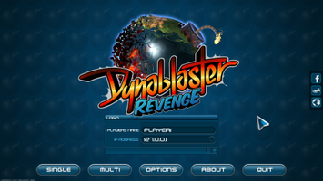
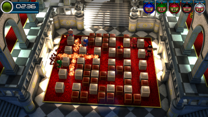
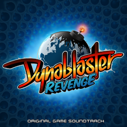

Dynablaster Revenge
Dieser Artikel wurde für die folgenden Ubuntu-Versionen getestet:
Ubuntu 14.04 Trusty Tahr
Zum Verständnis dieses Artikels sind folgende Seiten hilfreich:
Dynablaster Revenge  ist ein Remake des Klassikers Dynablaster bzw. Bomberman aus dem Jahr 1991, veröffentlicht von Hudson Soft. Das Hauptziel dieses Remakes ist es, so wenig wie möglich am ursprünglichen Gameplay zu ändern und dennoch zeitgemäße Neuerungen wie Multiplayer übers Netz oder aktuelle Visualisierung in 3D einzubringen. Das Spielprinzip von Dynablaster ist simpel: Wer sich nicht von seinen Gegnern sprengen lässt, der gewinnt. Indem man sogenannte Flammen- oder Bombenextras aufsammelt, wird entweder die Sprengkraft oder die Anzahl der Bomben erhöht. Mit ein wenig Taktik und Übung kann man so seinen Gegnern durch das geschickte Legen von Bomben den Weg abschneiden oder sie durch gezielt gesteuerte Kettenreaktionen aus dem Spiel bomben.
ist ein Remake des Klassikers Dynablaster bzw. Bomberman aus dem Jahr 1991, veröffentlicht von Hudson Soft. Das Hauptziel dieses Remakes ist es, so wenig wie möglich am ursprünglichen Gameplay zu ändern und dennoch zeitgemäße Neuerungen wie Multiplayer übers Netz oder aktuelle Visualisierung in 3D einzubringen. Das Spielprinzip von Dynablaster ist simpel: Wer sich nicht von seinen Gegnern sprengen lässt, der gewinnt. Indem man sogenannte Flammen- oder Bombenextras aufsammelt, wird entweder die Sprengkraft oder die Anzahl der Bomben erhöht. Mit ein wenig Taktik und Übung kann man so seinen Gegnern durch das geschickte Legen von Bomben den Weg abschneiden oder sie durch gezielt gesteuerte Kettenreaktionen aus dem Spiel bomben.
|  |  |
| Hauptmenü | Spielszene |
Installation¶
Benötigte Pakete¶
Folgende Pakete müssen installiert [1] werden:
libqt4-core
libqt4-gui
libqt4-opengl
libqt4-network
libasound2
libsdl2-2.0-0
 mit apturl
mit apturl
Paketliste zum Kopieren:
sudo apt-get install libqt4-core libqt4-gui libqt4-opengl libqt4-network libasound2 libsdl2-2.0-0
sudo aptitude install libqt4-core libqt4-gui libqt4-opengl libqt4-network libasound2 libsdl2-2.0-0
Installation des Spiels¶
Das Spiel selbst muss nicht auf dem System installiert werden, damit es spielbar ist. Von der Projektseite kann Dynablaster Revenge als .zip-Archiv heruntergeladen und in einem Verzeichnis nach Wahl (z.B. ~/dynablaster_revenge) entpackt [4] werden. Je nachdem, ob ein 32-Bit- oder 64-Bit-Ubuntu installiert ist, kann das Spiel anschließend über das Ausführen der entsprechenden vorkompilierten Binärdatei dynablaster_linux_x86 (32 Bit) oder dynablaster_linux_x64 (64 Bit) direkt aus dem Spielverzeichnis heraus gestartet [5] werden.
Problemlösungen¶
Spiel läuft langsam¶
Sollten Performance-Probleme festgestellt werden, ist es ggf. sinnvoll, VSync zu deaktivieren. Dies lässt sich erledigen, indem man die Datei data/game.ini im Spielverzeichnis öffnet [3] und dort in der Sektion video den Eintrag vsync von true auf false ändert.
Tastenkombinationen klappen nicht¶
Bei günstigen Tastaturen und Notebook-Tastaturen treten häufig Probleme hinsichtlich Keyboard Ghosting auf. Zum Beispiel wird nicht an das Betriebssystem kommuniziert, wenn die Tasten
↑ ,
← und
gleichzeitig gedrückt werden. Welche Tastenkombinationen gut funktionieren, lässt sich sehr gut im Artikel Keyboard Ghosting Explained! auf der Microsoft-Website nachvollziehen.
Infobox¶
| Dynablaster Revenge | |
| Originaltitel: | Dynablaster Revenge |
| Genre: | Arcade |
| Sprache: | |
| Veröffentlichung: | 2014 |
| Publisher: | Titan & Haujobb |
| Systemvoraussetzungen: | Es wird eine Grafikkarte vorausgesetzt, welche OpenGL 3.0 unterstützt und über mindestens 512 MB Grafikspeicher verfügt. Folgende Grafikkarten wurden erfolgreich getestet: - Nvidia Geforce GTX 560 Ti - Nvidia Geforce 8800 GTS - Nvidia Geforce 9600 GT - AMD Radeon HD 6540 - AMD Radeon HD 6850 - AMD Radeon HD 7750 - Intel HD Graphics 4000 Folgende Grafikkarten funktionieren nicht oder nur fehlerhaft: - Intel HD Graphics 2000/3000 - Intel GMA und GMA-X - Geforce 6600 oder älter - Radeon HD 4200 oder älter |
| Medien: | Download |
| Strichcode / EAN / GTIN: | - |
| Läuft mit: | nativ |


- Erstellt mit Inyoka
-
 2004 – 2017 ubuntuusers.de • Einige Rechte vorbehalten
2004 – 2017 ubuntuusers.de • Einige Rechte vorbehalten
Lizenz • Kontakt • Datenschutz • Impressum • Serverstatus -
Serverhousing gespendet von